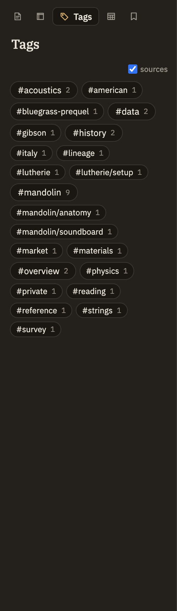

Docs/Left sidebar/Tags
Tags
Tags are simple labels you attach to notes to group related material. The Tags panel gathers every tag in your project into one alphabetical list, and clicking a tag shows you everything that carries it. It's a way to browse and filter — you add and remove tags in a note itself, not here.
Where tags come from
There are two ways to tag a note, and both feed the same list.
tags: [neuroscience, consciousness]. See Properties for details.# directly followed by a word anywhere in a note — #draft, #project/ui. The tag runs until the next space or punctuation.A heading like # Heading has a space after the #, so it's never mistaken for a tag. To tag something, write #tag with no space. A # inside a code sample is ignored too, so it won't clutter your tag list.
What the panel shows
Tags appear as chips sorted alphabetically, each labelled with the tag name and a count.
entrypoint and open-question — always stand out in the accent color, because they mark places worth returning to.
Selecting a tag
Click a chip to see everything that carries that tag. Matching notes and sources are listed right below the chips. Click a note to open it in the editor, or a source to open it in the source viewer.
One tag is active at a time — clicking another chip switches to it. Click the active chip again to deselect it and clear the results.
Selecting a tag doesn't change what's shown in the Notes tree. It builds its own list of matches inside the Tags panel; your full notes list stays exactly as you left it.